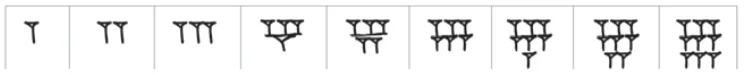
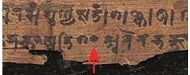
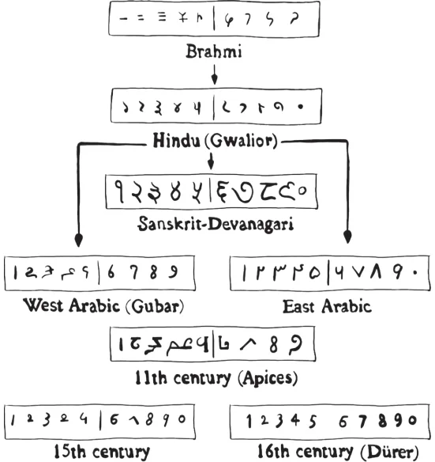

One lazy afternoon, Reema was flipping through an old book when - whoosh! \(- a\) piece of paper slipped out and floated to the floor. She picked it up and stared at the strange symbols all over it. “What is this?” she wondered. She ran to her father, holding the paper as if it were a secret treasure. He looked at it and smiled. “Around 4000 years ago, there flourished a civilisation in a region called Mesopotamia, in the western part of Asia, containing a major part of the present-day Iraq and a few other neighbouring countries. This is one of the ways they wrote their numbers!”

Reema’s eyes lit up, “Seriously? These strange symbols were numbers?” Her curiosity was sparked, and questions started swirling in her head.
Since What was their when have need for counting? humans been What were they counting? counting?
How would the been writing have people Since when Mesopotamians have written 20? 50? 100? numbers in the modern form?
Sensing her curiosity, her father started telling her how the idea of number and number representation evolved over the course of time, across geographies, to finally reach its modern efficient form. Get ready to travel back in time with them! Humans had the need to count even as early as the Stone Age. They were counting to determine the quantity of food they had, the number of animals in their livestock, details regarding trades of goods, the number of offerings given in rituals, etc. They also wanted to keep track of the passing days, e.g., to know and predict when important events such as the new moon, full moon, or onset of a season would occur. However, when they said or wrote down such numbers, they didn’t make use of the numbers that we use today. The structure of the modern oral and written numbers that we use today had its origin thousands of years ago in India. Ancient Indian texts, such as the Yajurveda Samhita, mentioned names of numbers based on powers of 10, almost as we say them orally today. For example, they listed names for the numbers one (eka), ten (dasha), hundred (shata), thousand
(sahasra), ten thousand (āyuta), etc., all the way up to 10 and beyond. The way we write our numbers today - using the digits 0 through \(9 -\) also originated and were developed in India, around 2000 years ago. The first known instance of numbers being written using ten digits, including the digit 0 (which was then notated as a dot), occurs in the Bakhshali manuscript (c. 3rd century CE). Aryabhata (c. 499 CE) was the first mathematician to fully explain, and do elaborate scientific computations with the Zero in the Bakhshali manuscript Indian system of 10 symbols. The Indian number system was transmitted to the Arab world by around 800 CE. It was popularised in the Arab world by the great Persian mathematician Al-Khwārizmī (after whom the word ‘algorithm’ is named) through his book On the Calculation with Hindu Numerals (c. 825) and by the noted philosopher Al-Kindi through his work On the Use of the Hindu Numerals (c. 830). From the Arab world, the Hindu numerals were transmitted to Europe and to parts of Africa by around 1100 CE. Though Al-Khwārizmī’s work on calculation with Hindu numerals was translated into Latin, it was the Italian mathematician Fibonacci who around the year 1200 really made the case to Europe to adopt the Indian numerals. However, the Roman numerals were so ingrained in European thinking and writing at the time that the Indian numerals did not gain widespread use for several more centuries. But eventually, during the European Renaissance and by the 17th century, not adopting them became impossible or it would impede scientific progress.

“The ingenious method of expressing every possible number using a set of ten symbols (each symbol having a place value and an absolute value) emerged in India. The idea seems so simple nowadays that its significance and profound importance is no longer appreciated. Its simplicity lies in the way it facilitated calculations and placed arithmetic foremost among useful inventions.”
Their use then spread to every continent, and are now used in every corner of the world. Because European scholars learned the Indian numerals from the Arab world, they called them ‛Arabic numerals’ to reflect their European perspective. On the other hand, as noted above, Arab scholars, such as Al-Khwārizmī and Al-Kindi, called them ‛Hindu numerals’. During the period of European colonisation, the European term Arabic numbers became widely used. However, in recent years, this mistake is being corrected in many textbooks and documents around the world, including in Europe. The most commonly used terminologies for the numbers we use today are ‛Hindu numerals’, ‛Indian numerals’, and the transitional ‛Hindu-Arabic numerals’. It is worth noting that the word ‛Hindu’ here does not refer to a religion, but rather a geography/people from whom these numbers came. The shape of the digits 0, 1, 2, ..., 9 used to write numbers in the Indian number system today evolved over a period of time, as shown below:

Evolution of the digits used in the Indian number system
Prior to the global adoption of the Indian system of numerals, different groups of people used different methods of representing numbers. We

shall take a glimpse of some of them. We will not be looking at different systems in a chronological order, but rather an order that shows us the main stages in the development of the idea of number representation. But first, let us explore some of the foundational ideas needed to count and to determine the number of objects in a given collection.